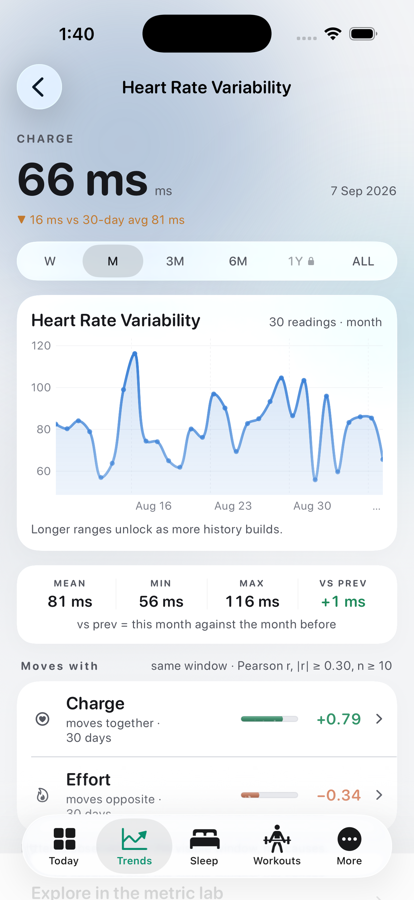
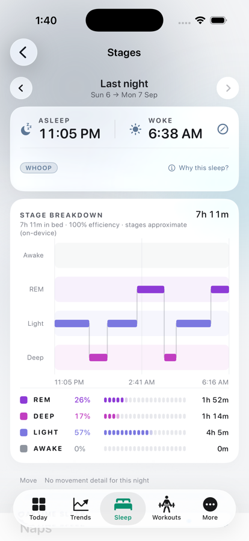
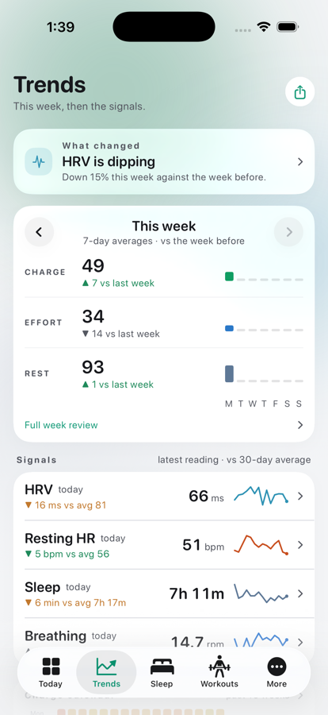
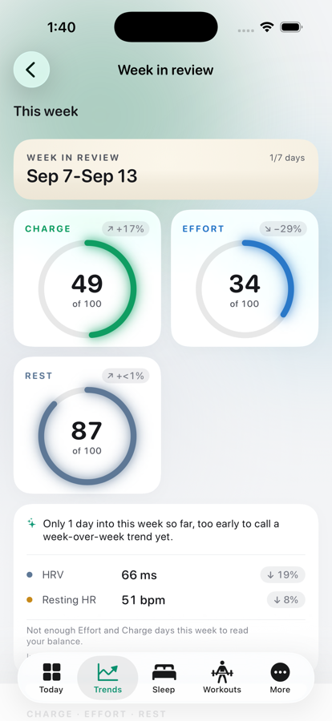
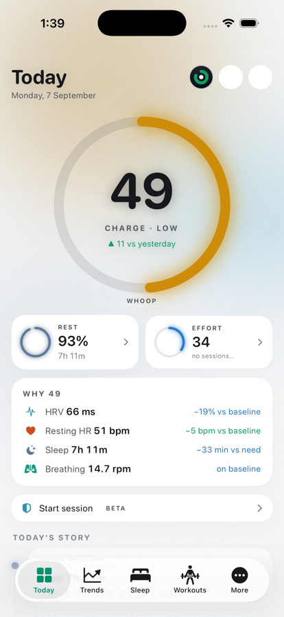

Before

After

One range control, one stepper, one ring, one haptic vocabulary, and the performance fixes found on the way. Real build, iPhone 17 Pro simulator, demo data.
Before: a left-aligned pill, locked ranges shown as faded text with no explanation. After: full width, equal segments, a sliding capsule, a haptic on change, a lock glyph on ranges that need more history, and a tap on a locked range says how many more days it needs.

Before: bare chevrons in two different headers. After: one stepper with glass round buttons, the title in the middle crossfading as numeric text, a tick per step and a warning tick at the ends.




StrandRing: five sizes (hero 236, large 124, medium 72, small 40, micro 22) plus custom, stroke derived from diameter, glow that scales and switches off below small, the house spring on draw-in, still under Reduce Motion, Low Power and the in-app quiet-motion setting. Used now by the Today hero and its Effort/Rest cards, the Night hero, the Week in review gauges (which were liquid vessels), the Trends week rows and the Workouts progress ring.



| Where | Finding | Status |
|---|---|---|
| Exercise page | One store read per session id in a loop (a lifter with 200 sessions of squats made 200 queries on open). | Fixed: one session read, filtered in memory. |
| Workouts hub | Each exercise's history read twice per load (records pass and lift tiles). | Fixed: one read per exercise, shared. |
| Trends (Pulse) | Finding, three week rows and four signals recomputed on every body pass over the whole history (about ten full walks per render; a render happens on every repository publish). | Fixed: memoized on the same key as the classic model. |
| Colour field | Three blurred circles redrawn 20× a second whenever a Halo tab is on screen, including in Low Power Mode. | Fixed: 12 fps, and still under Low Power / quiet motion. Pushed pages were already static. |
| Metric page | Correlations need every metric's series; that load is cached on the repository per refresh, so a second metric page is cheap. Recomputation is cached per range. | Already fine; verified. |
| Sleep tab (Night) | Stage coverage recomputed per body pass; the classic model is memoized and the coverage walk is over a handful of blocks. | Left as is; not measurable. |
| Set ledger | Every mutation upserts all rows of the session (tens of rows). Cheap today; would matter at hundreds. | Left as is; noted. |